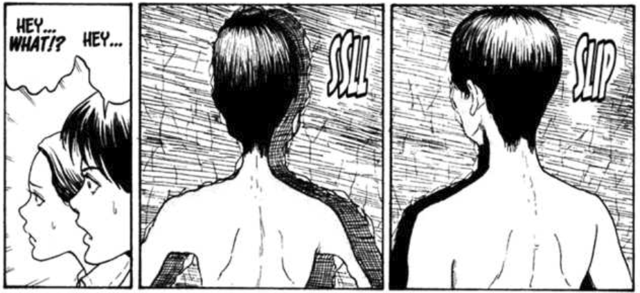

The Enigma of Amigara Fault |
There, you meet a girl named Yoshida, who tells you that she came after seeing her silhouette on TV. While she feels uneasy, she has the urge to check it out. You two meet another man called Nakagaki, who tells you the same thing, except he has already found his hole. Before you could do anything, he strips off his clothes and slips right into the hole.
